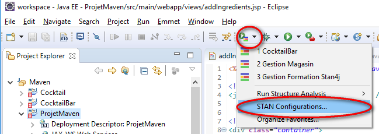
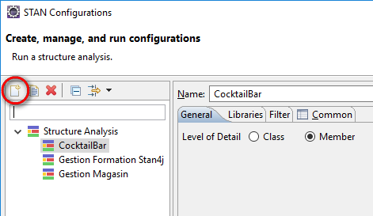
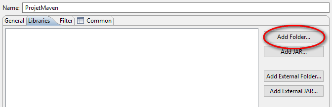

Télécharger Plugins pour Eclipse
Installation de la fonction Eclipse
STAN est disponible via notre site de mise à jour Eclipse. Veuillez suivre les instructions ci-dessous.
- Depuis Eclipse, allez à Aide - Installer un nouveau logiciel ...
- Ajouter un nouveau site pour STAN avec l'URL http://update.stan4j.com/ide
- Sélectionnez la fonction STAN IDE et appuyez sur "Suivant"
- Suivez l'assistant, lisez et acceptez les termes de la licence
- Redémarrer Eclipse
Générer un projet STAN à partir d'un projet éclipse :

 ==> 
Créé avec HelpNDoc Personal Edition: Générer facilement des livres électroniques Kindle